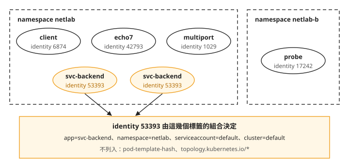
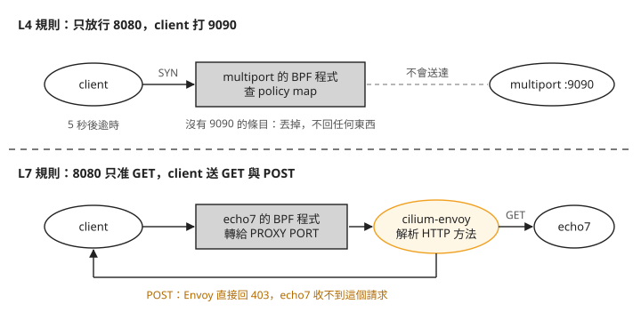
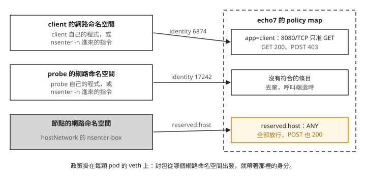

Day 8: CiliumNetworkPolicy——命名空間隔離、L3/L4 埠限制與 L7 方法¶

你的 netlab 命名空間裡有一個 HTTP 服務 echo7。照設計，只有同命名空間的 client 會呼叫它，而且只會讀（GET），不會寫（POST）。可是 Day 7 裝好 Cilium 之後，叢集裡沒有任何限制：隔壁命名空間的 pod 直接打 echo7 的 pod IP 也通，client 送 POST 也通。你要寫規則把這些擋掉，再確認規則真的在擋。
這個 sprint 處理過兩次「工作負載連到不該連的地方」：Day 4 用 Falco 在事情發生時發告警，Day 6 用 Tetragon 殺掉做出違規動作的行程。這一章用第三種做法：Cilium 的網路政策，在封包層讓連線建立不起來，或在 HTTP 層拒絕特定的方法。
要擋，就要寫網路政策：描述「哪些來源可以連到哪些 pod 的哪些埠」的規則。Kubernetes 有內建的 NetworkPolicy；Cilium 另外提供自己的資源 CiliumNetworkPolicy（簡稱 CNP），除了來源和埠，還能寫網域名稱和 HTTP 方法。這一章用的都是 CNP。
讀完之後，一條網路政策套上去、流量卻沒照預期被擋時，你能判斷是政策根本沒被 Cilium 收下、被另一條較寬的規則蓋過，還是流量來自 hostNetwork pod，本來就不受政策管；呼叫端看到的是逾時還是 403，也能告訴你擋下它的是哪一層的規則。
步驟 1: 重開叢集，重建實驗用的 pod¶
Day 7 收工時用 az aks stop 停下叢集。重新 az aks start 之後，先確認 Day 7 的狀態還在：kube-proxy 沒有回來，Cilium 的 kube-proxy replacement 仍然開著。Day 7 把 kube-proxy 的 DaemonSet 釘在一個不存在的節點選擇器上（Day 7 的「刪掉的 kube-proxy 一分多鐘後又回來了」），這裡要看受管控制面重開叢集時有沒有把這個修改蓋回去。
下面的指令有兩種執行位置。標著 (node-shell) 的，是在 Day 7 建在 netlab 的 node-shell DaemonSet 裡執行：它在每個節點放一顆開著 hostPID、hostNetwork、privileged 的 ubuntu pod，用 kubectl -n netlab exec <node-shell 的 pod 名稱> -- … 進去，就能在節點上下指令。cilium-dbg 是 Cilium agent 內附的除錯工具，要在節點上的 agent 容器裡執行，例如 kubectl -n kube-system exec ds/cilium -c cilium-agent -- cilium-dbg status。本章之後的 cilium-dbg 指令都用這個方式執行：
$ kubectl -n kube-system get ds kube-proxy -o custom-columns=…
NAME DES CUR RDY SEL
kube-proxy 0 0 0 map[lab.local/no-kube-proxy:true]
$ kubectl get pods -A --no-headers | grep -c kube-proxy → 0
$ (node-shell) nsenter -t 1 -m -p -- pgrep -a kube-proxy → (沒有行程)
$ cilium-dbg status --verbose | grep -A2 KubeProxyReplacement
KubeProxyReplacement: True
Socket LB: Enabled
Socket LB Coverage: Full
DaemonSet 的 DES、CUR 都是 0，選擇器還是那個不存在的標籤，節點上找不到 kube-proxy 行程，KubeProxyReplacement 是 True。重開叢集後的這個檢查，每次開工都值得做一次。
重開叢集換來的是全新的 VM（Day 7 步驟 6）。Deployment 和 DaemonSet 會自己回來，直接用 kind: Pod 建立的 pod 不會。Day 7 的 client 就是這種 pod，要重新建立。
這一章在 Day 7 的 netlab 命名空間（client 和兩顆 svc-backend）之外，再加三個工作負載：
multiport：一顆 pod 兩個容器（hashicorp/http-echo），分別在 8080 和 9090 回應PORT-8080、PORT-9090。Servicesvc-multiport把 80 對到 8080、90 對到 9090。之後用它測「這個埠通、那個埠不通」。echo7：traefik/whoami，聽 8080，Servicesvc-echo7的 80 對到它。選它是因為沒有政策時它對 GET 和 POST 都回 200。如果後端自己就拒絕 POST，之後看到 POST 失敗，就分不出是政策擋的還是應用拒絕的。netlab-b命名空間的probe：跟client一樣是nicolaka/netshoot，用來從另一個命名空間發請求。probe也是直接建立的 pod，重開叢集後同樣要重建。
下面這份檔案把重建 client 和這三個工作負載寫在一起。svc-backend 是 Deployment，重開叢集後會自己回來，不在這份檔案裡：
cat > day8-lab.yaml <<'EOF'
apiVersion: v1
kind: Pod
metadata:
name: client
namespace: netlab
labels: {app: client}
spec:
containers:
- name: c
image: nicolaka/netshoot:v0.13
command: ["sleep", "infinity"]
---
apiVersion: v1
kind: Namespace
metadata:
name: netlab-b
---
apiVersion: v1
kind: Pod
metadata:
name: probe
namespace: netlab-b
labels: {app: probe}
spec:
containers:
- name: c
image: nicolaka/netshoot:v0.13
command: ["sleep", "infinity"]
---
apiVersion: apps/v1
kind: Deployment
metadata:
name: multiport
namespace: netlab
spec:
replicas: 1
selector:
matchLabels: {app: multiport}
template:
metadata:
labels: {app: multiport}
spec:
containers:
- name: p8080
image: hashicorp/http-echo:1.0
args: ["-listen=:8080", "-text=PORT-8080"]
ports: [{containerPort: 8080}]
- name: p9090
image: hashicorp/http-echo:1.0
args: ["-listen=:9090", "-text=PORT-9090"]
ports: [{containerPort: 9090}]
---
apiVersion: v1
kind: Service
metadata:
name: svc-multiport
namespace: netlab
spec:
selector: {app: multiport}
ports:
- {name: p8080, port: 80, targetPort: 8080}
- {name: p9090, port: 90, targetPort: 9090}
---
apiVersion: apps/v1
kind: Deployment
metadata:
name: echo7
namespace: netlab
spec:
replicas: 1
selector:
matchLabels: {app: echo7}
template:
metadata:
labels: {app: echo7}
spec:
containers:
- name: whoami
image: traefik/whoami:v1.10
args: ["--port", "8080"]
ports: [{containerPort: 8080}]
---
apiVersion: v1
kind: Service
metadata:
name: svc-echo7
namespace: netlab
spec:
selector: {app: echo7}
ports:
- {port: 80, targetPort: 8080}
EOF
kubectl apply -f day8-lab.yaml
kubectl -n netlab wait --for=condition=Ready pod --all --timeout=180s
之後寫成「client → svc-multiport:80」這種形式的結果，都是在呼叫端的 pod 裡用 kubectl exec 執行 curl 得到的，例如 kubectl -n netlab exec client -- curl -s -m 5 http://svc-multiport.netlab:80/。
步驟 7 還會用到一顆特權 pod，到那一步再建。
步驟 2: 沒有政策時，什麼都通¶
先把沒有任何政策時的狀態記下來。之後每看到一次「被擋了」，都要能對照這裡，確認它原本是通的，不是本來就不通。下面是從 client 和 probe 對各個目標發 curl 的結果，左邊是誰打誰，右邊是回應：
### 同命名空間
client → svc-multiport:80(→8080) PORT-8080
client → svc-multiport:90(→9090) PORT-9090
client → svc-echo7 GET 200
client → svc-echo7 POST 200
### 出叢集
client → example.com 200
### 跨命名空間（netlab-b/probe → netlab）
probe → svc-multiport:80 PORT-8080
probe → echo7 的 pod IP 200 ← 連 Service 都不用經過
同命名空間全通，對外的 example.com 也通。要注意的是最後一行：probe 在另一個命名空間，直接打 echo7 的 pod IP 也拿到 200。Kubernetes 的命名空間只是把 API 物件分組，本身不擋任何網路流量。
Cilium 怎麼認出一顆 pod¶
政策寫的是「誰可以連誰」，所以 Cilium 得先能認出「誰」。直覺會想用 IP，可是 pod 重建之後 IP 就變了。來看 Cilium 實際怎麼記這些 pod。Cilium 把它管理的每個網路端點（一般就是一顆 pod）叫 endpoint，並替每個 endpoint 建一個 CiliumEndpoint 物件，縮寫是 cep：
$ kubectl get cep -A -o custom-columns=NS:…,NAME:…,ID:.status.identity.id,IP:…
NS NAME ID IP
netlab client 6874 10.244.0.78
netlab echo7-… 42793 10.244.0.212
netlab multiport-… 1029 10.244.0.104
netlab svc-backend-…-h2hkx 53393 10.244.0.178
netlab svc-backend-…-t5qzj 53393 10.244.0.20 ← 兩顆 pod 同一個號
netlab-b probe 17242 10.244.0.164
看 ID 欄。每顆 pod 都有一個號碼，兩顆 svc-backend 的 IP 不同，號碼卻都是 53393。這個號碼叫 security identity：Cilium 把 endpoint 身上的標籤組合對應成一個數字，標籤一樣的 pod 就拿到同一個號碼。政策比對的是這個號碼，節點上的 BPF map（Day 5 看過的那種核心資料表）存的也是它，不是 IP。所以 pod 重建、換了 IP，只要標籤沒變，政策照樣適用。
用 agent 的 cilium-dbg 查 53393 由哪些標籤組成：
$ cilium-dbg identity get 53393
53393 k8s:app=svc-backend
k8s:io.cilium.k8s.namespace.labels.kubernetes.io/metadata.name=netlab
k8s:io.cilium.k8s.policy.cluster=default
k8s:io.cilium.k8s.policy.serviceaccount=default
k8s:io.kubernetes.pod.namespace=netlab
只有五個標籤。pod 身上其實還有 pod-template-hash 和 topology.kubernetes.io/*，Cilium 預設把這類標籤排除在 identity 之外。如果 pod-template-hash 也算進去，同一個 Deployment 每滾動更新一次，就會換一批新的 identity。
把這幾個 pod 和它們的號碼畫成圖：

我們可以從圖上看到兩件事。第一，號碼跟著標籤走，不跟著 pod 走：兩顆 svc-backend 標籤相同，號碼就相同。把 svc-backend 從 2 顆擴到 3 顆，第三顆的 identity 仍然是 53393。第二，命名空間本身就是 identity 的一部分，所以 netlab-b 的 pod 不可能跟 netlab 的 pod 共用號碼，這是下一步命名空間隔離能成立的原因。反過來，替 pod 加上參與 identity 計算的標籤，identity 就會換掉，見選做觀察：改了標籤，同一組副本的 identity 更新不同步。
步驟 3: default-deny 與命名空間隔離¶
現在開始擋。第一條政策讓 netlab 裡所有 pod 預設拒絕所有進來的連線，這叫 default-deny；之後再一條條加上允許的來源。
cat > default-deny-ingress.yaml <<'EOF'
apiVersion: cilium.io/v2
kind: CiliumNetworkPolicy
metadata:
name: default-deny-ingress
namespace: netlab
spec:
endpointSelector: {} # every endpoint in this namespace
enableDefaultDeny: {ingress: true, egress: false}
ingress:
- {}
EOF
kubectl apply -f default-deny-ingress.yaml
endpointSelector: {} 選中這個命名空間的所有 endpoint。讓政策生效的是最後那條空規則 - {}：它讓選中的 endpoint 開始檢查進來的連線，卻沒有列出任何允許的來源，結果就是全部拒絕。enableDefaultDeny 只是把意圖寫明，單靠它不夠，下一小節會看到少了空規則會怎樣。
套上之後，要確認政策有沒有在執行，得問節點上的 Cilium agent。這個部署的 CiliumEndpoint 沒有同步 .status.policy，所以用 kubectl get cep 查政策欄位會得到 <none>，不能據此判斷政策未生效：
$ kubectl get cep -n netlab -o custom-columns=NAME:…,IN:.status.policy.ingress.enforcing
NAME IN
client <none> ← 政策明明在執行
multiport <none>
kubectl get cnp 的 VALID 欄只說明政策被 agent 收下，不代表它正在某個 endpoint 上執行。用 cilium-dbg endpoint list 查執行方向，逐條規則與計數器則用步驟 4 的 cilium-dbg bpf policy get <endpoint 編號> 查。下面每一行依序是 endpoint 編號、identity、正在檢查的方向、標籤，最後兩行是實際打的結果：
$ cilium-dbg endpoint list -o json | …
680 1029 ingress k8s:app=multiport,k8s:io.kubernetes.pod.namespace=netlab
2272 6874 ingress k8s:app=client,…
62 17242 none k8s:app=probe,k8s:io.kubernetes.pod.namespace=netlab-b ← 隔壁不受影響
$ client → svc-multiport curl: (28) 逾時
$ probe → svc-multiport curl: (28) 逾時
multiport（endpoint 680）和 client（endpoint 2272）的第三欄變成 ingress，表示進來的連線現在要逐一比對政策；netlab-b 的 probe 還是 none，因為這條政策只管它所在命名空間的 endpoint。後面的步驟會用這些編號查各個 endpoint 的狀態。你自己的叢集裡，編號和 identity 號碼會不一樣，照 endpoint list 的輸出代換。同命名空間的 client 現在也連不上 multiport 了。
被丟掉的封包長什麼樣子¶
呼叫端只看到逾時。要確認是政策丟的，在節點上的 agent 裡開 cilium-dbg monitor，只看丟包事件。下面是此時（只有 default-deny）client 打 multiport 留下的紀錄：
$ cilium-dbg monitor --type drop
xx drop (Policy denied) flow … to endpoint 680, file bpf_lxc.c:2410,
identity 6874->1029: 10.244.0.78:59028 -> 10.244.0.104:8080 tcp SYN ×4
這一行有三個地方要看：
to endpoint 680、bpf_lxc.c：丟包發生在目的地multiport那一端。bpf_lxc是 Cilium 掛在每顆 pod 網路介面上的 BPF 程式，進來的連線由被保護的那顆 pod 這一端檢查。identity 6874->1029：紀錄寫的是哪個 identity 打哪個 identity，IP 只是附帶資訊。- 目的位址是
multiport的 pod IP 和 8080，不是 Service 的 ClusterIP 和 80。Day 7 的 socket LB 在connect()時就把 ClusterIP 換成了後端位址（Day 7 的「kubeProxyReplacement: false不代表 kube-proxy 在做事」），政策看到的是換過之後的位址。×4是同一個 SYN 被丟了四次：TCP 一直重送，呼叫端最後逾時。
少了那條空規則會怎樣¶
寫 default-deny 時，很自然會先試兩種更短的寫法。這一小節的兩段輸出是示範，取自還沒套上正確版時的紀錄。想自己試，記得試完要把正確版套回去，否則後面的步驟結果會不同。第一種只寫 enableDefaultDeny、不寫 ingress，API server 直接退件：
$ kubectl apply -f default-deny-ingress.yaml
The CiliumNetworkPolicy "default-deny-ingress" is invalid:
* <nil>: Invalid value: "": "spec" must validate at least one schema (anyOf)
* spec.ingress: Required value
CRD 要求 spec 裡至少要有一個規則區段。對有寫該方向規則的政策而言，enableDefaultDeny 預設就是 true，這個欄位的用途其實是設成 false：讓一條政策套上去時，不要把 endpoint 切成預設拒絕。它是規則的修飾，不能單獨成為一條規則。這種失敗至少看得到，API server 退件，原本套著的政策不受影響。
第二種補上一個空陣列 ingress: []，kubectl apply 就成功了，但流量完全沒變：
$ kubectl apply -f dd-a.yaml # enableDefaultDeny + ingress: []
ciliumnetworkpolicy.cilium.io/default-deny-ingress created
$ kubectl get cnp -n netlab
NAME AGE VALID
default-deny-ingress 8s False
$ kubectl -n netlab get cnp default-deny-ingress -o yaml | tail -5
status:
conditions:
- message: rule must have at least one of Ingress, IngressDeny, Egress, EgressDeny
status: "False"
type: Valid
### 流量呢？
client → svc-multiport PORT-8080 ← 完全沒變
probe → svc-multiport PORT-8080 ← 完全沒變
kubectl apply 回 created，結束碼是 0，沒有任何警告。如果你已經套過正確版，同名的政策會被這一版覆蓋，這裡顯示的會是 configured，而且套著正確版時被擋住的流量會重新通過。唯一的線索是 kubectl get cnp 的 VALID 欄是 False，以及 .status.conditions 裡的原因：一條規則至少要有 Ingress、IngressDeny、Egress、EgressDeny 其中一個，空陣列不算。agent 沒有收下這條政策，所以流量照舊。
換句話說，無效的網路政策不會讓流量停下來，而是讓流量照常通過，跟沒套一樣。套完政策，先看 VALID 欄，再實際打一次，不要只看 kubectl apply 有沒有成功。在 CI 裡要擋這種情況，檢查 .status.conditions[?(@.type=="Valid")].status，不要只看 kubectl apply 的結束碼。
如果你照著試了這兩種寫法，用步驟一開始那份正確的檔案重新套回去：
命名空間隔離¶
default-deny 之後，再加一條政策 allow-same-namespace，允許同一個命名空間的 pod 互連。完整檔案如下：
cat > allow-same-namespace.yaml <<'EOF'
apiVersion: cilium.io/v2
kind: CiliumNetworkPolicy
metadata:
name: allow-same-namespace
namespace: netlab
spec:
endpointSelector: {}
ingress:
- fromEndpoints:
- {}
EOF
kubectl apply -f allow-same-namespace.yaml
它選中所有 endpoint（endpointSelector: {}），重點是 ingress 規則這幾行：
fromEndpoints 列出允許的來源。這裡放了一個空的 selector {}，看起來像「任何 endpoint」，但 CNP 是命名空間層級的資源，Cilium 會替它補上「來源也在本命名空間」這個條件。結果：
client(netlab) → svc-multiport:80 PORT-8080 ✅
probe(netlab-b) → svc-multiport:80 逾時 ❌
probe(netlab-b) → multiport 的 pod IP 逾時 ❌ ← 繞過 Service 也沒用
netlab 內部互通，netlab-b 的 probe 不論打 Service 還是直接打 pod IP 都逾時。直接打 pod IP 也擋得住，因為 Cilium 比對的是來源的 identity，而 identity 裡帶著命名空間標籤，跟用哪個位址連過來無關。
步驟 4: L3/L4 埠限制¶
命名空間隔離只管「誰」。接下來把 multiport 再收緊：只有 client 可以連，而且只能連 8080。這條政策叫 multiport-8080-only，選中 app: multiport，ingress 規則是：
ingress:
- fromEndpoints:
- matchLabels: {app: client}
toPorts:
- ports: [{port: "8080", protocol: TCP}] # the endpoint's port, not the Service's
toPorts 寫的是 8080，也就是 pod 上的埠，不是 Service 的 80。政策掛在 endpoint 上，比對時看到的已經是 socket LB 換過的後端埠，Service 的埠號對它沒有意義。完整檔案：
cat > l3l4-port.yaml <<'EOF'
apiVersion: cilium.io/v2
kind: CiliumNetworkPolicy
metadata:
name: multiport-8080-only
namespace: netlab
spec:
endpointSelector:
matchLabels: {app: multiport}
ingress:
- fromEndpoints:
- matchLabels: {app: client}
toPorts:
- ports:
- {port: "8080", protocol: TCP}
EOF
把它套上去，再打一次：
$ kubectl apply -f l3l4-port.yaml # 只放行 client → multiport:8080
client → :80(8080) PORT-8080
client → :90(9090) PORT-9090 ← 一點都沒收緊
9090 照樣通，因為上一步的 allow-same-namespace 還在。網路政策是允許清單：一個 endpoint 身上的所有規則取聯集，任何一條允許就放行。allow-same-namespace 已經允許同命名空間的所有連線，再加一條更窄的規則，不會讓已經允許的連線變成拒絕。要收緊，得刪掉那條寬的：
刪掉之後：
client → :80(8080) PORT-8080 ✅ 放行的埠通
client → :90(9090) curl: (28) 逾時 ❌ 沒放行的埠不通
client → svc-backend:80 curl: (28) 逾時 ❌ 沒放行的目標不通
這次 8080 通、9090 不通。svc-backend 也連不上了，因為它身上現在只剩 default-deny，沒有任何允許的來源。
Cilium 另外有 ingressDeny／egressDeny，用來表達「就算別的規則允許也要擋」。本課沒有驗證這一組規則。
政策在資料平面上長什麼樣子¶
每個 endpoint 套用的政策，最後會寫成節點上的一張 BPF map，叫 policy map。用 endpoint 編號查 multiport（680）的那一張：
$ cilium-dbg bpf policy get 680 # 680 = multiport 這顆 endpoint
POLICY DIRECTION LABELS PORT/PROTO PROXY PORT BYTES PACKETS
Allow Ingress reserved:host ANY NONE 968 12
Allow Ingress k8s:app=client 8080/TCP NONE 974 12
k8s:…namespace=netlab
Allow Egress ANY ANY NONE - -
這張表就是 multiport 現在套用的全部政策。第二行允許 app=client 打 8080/TCP。表裡沒有 9090 這一列，所以 9090 被拒：政策裡並沒有一條「拒絕 9090」的規則，被拒是因為找不到對應的允許條目。
右邊的 BYTES、PACKETS 是每一列的計數器，可以拿來確認某條規則到底有沒有被用到。這跟 Day 7 用 iptables 的計數器判斷「哪一條規則做了那次翻譯」是同樣的方法。
第一行的 reserved:host 不是任何一條政策寫出來的，它代表節點本身。步驟 7 會回頭看這一行。
步驟 5: FQDN egress¶
前面管的都是「誰能連進來」（ingress）。反方向是管 pod 能連出去哪裡（egress）。對外的服務常常換 IP，手動維護 IP 清單很麻煩，Cilium 讓你直接寫網域名稱，這叫 FQDN 政策（FQDN 是完整網域名稱）。下面這條政策叫 client-fqdn-egress，選中 app: client，讓它只能連 example.com：
egress:
- toEndpoints:
- matchLabels:
io.kubernetes.pod.namespace: kube-system
k8s-app: kube-dns
toPorts:
- ports:
- {port: "53", protocol: ANY}
rules:
dns:
- matchPattern: "*"
- toFQDNs:
- matchName: "example.com"
這裡的 toEndpoints 同時指定 kube-system 命名空間與 k8s-app: kube-dns，選取叢集 DNS 的 pod。Cilium 官方跨命名空間範例也使用這兩個條件。完整檔案如下：
cat > fqdn-egress.yaml <<'EOF'
apiVersion: cilium.io/v2
kind: CiliumNetworkPolicy
metadata:
name: client-fqdn-egress
namespace: netlab
spec:
endpointSelector:
matchLabels: {app: client}
egress:
- toEndpoints:
- matchLabels:
io.kubernetes.pod.namespace: kube-system
k8s-app: kube-dns
toPorts:
- ports:
- {port: "53", protocol: ANY}
rules:
dns:
- matchPattern: "*"
- toFQDNs:
- matchName: "example.com"
EOF
kubectl apply -f fqdn-egress.yaml
第二段 toFQDNs 是允許的網域清單。第一段允許 client 對叢集的 DNS（kube-dns）查詢，並加上 rules.dns。這一段不能省，等一下看資料平面就知道為什麼。結果：
client → example.com 200
client → ifconfig.me curl: (28) 逾時
client → www.google.com curl: (28) 逾時
client → svc-multiport curl: (28) 逾時 ← 叢集內也一起被擋了
client 的 dig example.com <addr-a> ← DNS 本身還通
example.com 通，另外兩個網域逾時，DNS 查詢本身還能用。倒數第二行要特別注意：連同命名空間的 svc-multiport 也不通了。一條政策只要出現 egress 區段，被選中的 endpoint 對外的所有連線就改成預設拒絕，包括原本叢集內的流量。替一顆 pod 加 FQDN 政策時，它需要的叢集內目的地也要一起列進去。
Cilium 怎麼知道 example.com 是哪個 IP¶
看 client（endpoint 2272）的 policy map：
$ cilium-dbg bpf policy get 2272 # 2272 = client
Allow Egress k8s:k8s-app=kube-dns … 53/UDP PROXY PORT 44427 34828 bytes
Allow Egress fqdn:example.com ANY NONE 16864 bytes
reserved:world
兩列都跟步驟 4 的不一樣。DNS 那一列的 PROXY PORT 有一個數字：符合這一列的封包不會直接放行，而是轉給 cilium-agent 裡的 DNS proxy。proxy 替 client 轉發查詢，看到回應裡的 IP，再把這些 IP 加進 fqdn:example.com 那一列。所以第二列是執行時動態產生的。它底下那個 reserved:world 是 Cilium 給叢集外部位址的身分：叢集外的 IP 沒有 pod 標籤，一律歸在這個保留身分下。
proxy 記下的網域與 IP 對應可以直接查：
$ cilium-dbg fqdn cache list
Endpoint Source FQDN TTL IPs
2272 lookup example.com. 30 <addr-b>,<addr-a>
2272 lookup ifconfig.me. 30 <addr-c>
2272 lookup www.google.com. 30 <addr-d>,…
DNS proxy 擷取 DNS 回應中的 IP，供符合 toFQDNs 的政策放行。第一段 rules.dns 讓 DNS 查詢經過 proxy；缺少這段設定，proxy 就無法擷取解析結果，toFQDNs 也沒有對應的 IP 可供放行。
快取裡還有 ifconfig.me 和 www.google.com，可是這兩個網域的連線剛剛被擋了，見疑難排解：被擋掉的網域照樣查得到、進了快取。
代價：一次 curl，proxy 看到十次查詢¶
Day 4 看過 ndots:5：pod 查一個點數不夠多的名字時，會先依序接上各個搜尋網域試一輪。在 client 上執行一次 curl http://example.com/，同時用 cilium-dbg monitor --type l7 看 DNS proxy 收到的查詢，一共十次：
| # | 查詢名稱 | 結果 |
|---|---|---|
| 1–2 | example.com.netlab.svc.cluster.local. |
空 |
| 3–4 | example.com.svc.cluster.local. |
空 |
| 5–6 | example.com.cluster.local. |
空 |
| 7–8 | example.com.<Azure 內部搜尋域>. |
空 |
| 9–10 | example.com. |
有答案 |
每個名字查 A 和 AAAA 各一次，所以兩次一組。第 7–8 那一組是 AKS 在 /etc/resolv.conf 多加的 Azure 內部搜尋網域，所以在 AKS 上比一般 Kubernetes 多一輪。十次裡只有最後兩次有答案，但十次全部要經過使用者空間的 proxy。
再比較套政策前後，解析一個名字要花多少時間（curl 的 time_namelookup，各量 30 次）：
p50 從 1.61 ms 變成 3.98 ms，約 2.5 倍。這是解析一個名字的總時間，包含那十次查詢。同樣的 ndots:5 在 Day 4 讓 Falco 每分鐘多出 180 條要有人去看的誤報；在這裡則是每次解析多花約 2.4 ms。
下一步要從 client 打叢集內的 echo7。這條 egress 政策還在的話，client 連不到叢集內的任何服務，所以先刪掉它：
步驟 6: L7，GET 過而 POST 被擋¶
回到開場的需求：echo7 只讓 client 讀，不讓它寫。GET 和 POST 走同一個埠、同一種 TCP 連線，只看位址和埠的 L3/L4 規則分不出來，要讀到 HTTP 請求的內容才行。看應用層內容做判斷的政策叫 L7 政策。這條政策叫 echo7-get-only，選中 app: echo7，寫法跟步驟 4 一樣，只在 toPorts 底下多一段 rules.http。完整檔案：
cat > l7-http.yaml <<'EOF'
apiVersion: cilium.io/v2
kind: CiliumNetworkPolicy
metadata:
name: echo7-get-only
namespace: netlab
spec:
endpointSelector:
matchLabels: {app: echo7}
ingress:
- fromEndpoints:
- matchLabels: {app: client}
toPorts:
- ports:
- {port: "8080", protocol: TCP}
rules:
http:
- method: "GET"
EOF
kubectl apply -f l7-http.yaml
新增的就是這幾行：
貼上之前，echo7 被 default-deny 擋著，client 的 GET 會逾時。貼上之後：
$ curl -o /dev/null -w 'http_code=%{http_code} time_total=%{time_total}\n' http://svc-echo7.netlab/
http_code=200 time_total=0.003433
$ curl -X POST -d x=1 http://svc-echo7.netlab/
Access denied
http_code=403 time_total=0.003860
$ PUT → 403 DELETE → 403
GET 回 200，POST、PUT、DELETE 都回 403。同一顆 pod、同一個 Service、同一個 8080/TCP，結果只因為 HTTP 方法不同而不同。
呼叫端看到的差別¶
L7 政策擋下請求的方式跟 L4 完全不同。把兩種拒絕在呼叫端看到的東西並排：上面是 POST 被 L7 政策拒絕，下面是步驟 4 的 9090 被 L4 政策擋下：
### L7 拒絕（POST → echo7）
$ curl -i -X POST -d x=1 http://svc-echo7.netlab/
HTTP/1.1 403 Forbidden
content-type: text/plain
server: envoy ← 注意這一行
connection: close
Access denied
### L4 丟包（client → multiport:9090）
$ curl -v http://svc-multiport.netlab:90/
* Trying 10.0.78.148:90...
* Connection timed out after 5002 milliseconds
curl: (28) Connection timed out after 5002 milliseconds
L7 的拒絕是一個完整的 HTTP 回應，header 裡有 server: envoy。Envoy 是一個 HTTP proxy，Cilium 在每個節點上以 cilium-envoy DaemonSet 執行它（Day 7 裝 Cilium 時就看過這個元件）。有了 rules.http，送往 echo7 8080 的連線會先轉給 Envoy，由它解析 HTTP 方法，再決定轉送或拒絕。L4 規則則是直接丟掉 SYN，呼叫端什麼都收不到，只能等到逾時。
把兩條路徑畫成圖：

照著圖上兩條路徑看。L4 那條，封包在 multiport 的 BPF 程式就被丟掉，什麼都不回。L7 那條，BPF 程式把連線轉給 Envoy，GET 繼續送到 echo7，POST 由 Envoy 直接回 403，echo7 根本沒收到這個請求。
這個差別在實務上有三個影響：
- 失敗多快回來：403 在 3.9 毫秒內就回來；L4 要等呼叫端的連線逾時，這裡是 5 秒，正式環境常設 30 秒以上。等待的這段時間，呼叫端的執行緒和連線都被佔著。
- 好不好追查：403 帶著回應本文和 header，會留在呼叫端的日誌裡。L4 的逾時跟「對方掛了」「網路斷了」「DNS 壞了」看起來一樣，要到節點上開
cilium-dbg monitor才看得到Policy denied。 - 會不會重試：多數 HTTP 用戶端遇到逾時會重試，遇到 403 不會。同樣擋一個請求，L4 寫法會讓被擋的呼叫端一直重打，L7 寫法不會。
Envoy 回的 403 也有副作用，見疑難排解：應用日誌查不到被拒絕的請求。
L7 的成本¶
多經過一個 proxy 要付出時間。同一個 client 對 echo7 送同一個 GET，兩種政策只差 rules.http 那三行，各量 400 次：L7 政策的 p50 比 L4 多約 0.49 ms（約 +34%）。同一種政策再量一輪，p50 只差 30 µs 以內，所以這個差距來自 L7 規則。對一般的服務呼叫，這通常可以接受；對一次請求要經過很多層服務、或延遲很敏感的路徑，要把它算進去。
時間花在哪裡，從資料平面看得出來。下面比較兩種政策下 echo7（endpoint 160）的 policy map，以及 agent 回報的 proxy 狀態：
### L7 政策生效時
$ cilium-dbg bpf policy get 160 # 160 = echo7
Allow Ingress k8s:app=client 8080/TCP PROXY PORT 12286
$ cilium-dbg status | grep Proxy
Proxy Status: OK, … 1 redirects active on ports 10000-20000, Envoy: external
### 換成 L4 政策
Allow Ingress k8s:app=client 8080/TCP PROXY PORT NONE
Proxy Status: OK, … 0 redirects active
PROXY PORT 從 NONE 變成一個數字，redirects 從 0 變成 1：封包不再由 BPF 查完 map 直接轉送，而是進到使用者空間給 Envoy 解析。Envoy: external 表示 Envoy 跑在獨立的 cilium-envoy DaemonSet 裡，不在 agent 行程內。這組數字只代表一顆 endpoint、一條 HTTP 規則的情況；cilium-envoy 的記憶體在這個規模下維持在 14 Mi 左右，規則或流量多起來會怎樣，本課沒有測。
步驟 7: nsenter 與 hostNetwork pod¶
Day 6 看過一個繞過攔截的方法：Tetragon 的攔截以 cgroup 為範圍，nsenter 只換命名空間、不換 cgroup，所以另一個命名空間的特權 pod 鑽進受保護的 pod，做被禁止的事也不會被殺（Day 6 步驟 4）。同樣的做法對網路政策有沒有用？
在 attacker 命名空間建一顆特權 pod nsenter-box：開著 hostPID（看得到節點上所有行程，才查得到別的 pod 的 PID）和 privileged，另外還開了 hostNetwork（直接使用節點的網路）：
cat > attacker.yaml <<'EOF'
apiVersion: v1
kind: Namespace
metadata:
name: attacker
---
apiVersion: v1
kind: Pod
metadata:
name: nsenter-box
namespace: attacker
labels: {app: nsenter-box}
spec:
hostPID: true
hostNetwork: true
tolerations:
- operator: Exists
containers:
- name: c
image: nicolaka/netshoot:v0.13
command: ["sleep", "infinity"]
securityContext:
privileged: true
EOF
kubectl apply -f attacker.yaml
要進入 client 的網路命名空間，得先知道 client 在節點上的 PID。/proc/<pid> 裡只有指令列，看不出屬於哪顆 pod，所以改用位址反查：逐一進入每個行程的網路命名空間讀 eth0 的位址，跟 client 的 pod IP 比對：
ECHO7_IP=$(kubectl -n netlab get pod -l app=echo7 -o jsonpath='{.items[0].status.podIP}')
MULTI_IP=$(kubectl -n netlab get pod -l app=multiport -o jsonpath='{.items[0].status.podIP}')
PROBE_IP=$(kubectl -n netlab-b get pod probe -o jsonpath='{.status.podIP}')
A() { kubectl -n attacker exec nsenter-box -- "$@"; }
CLIENT_IP=$(kubectl -n netlab get pod client -o jsonpath='{.status.podIP}')
pids=$(A sh -c 'for p in $(ls /proc | grep -E "^[0-9]+$"); do
ip=$(nsenter -t $p -n ip -4 -o addr show dev eth0 2>/dev/null | awk "{print \$4}")
[ -n "$ip" ] && echo "$p ${ip%%/*}"; done' | sort -u)
echo "$pids"
CLIENT_PID=$(echo "$pids" | awk -v ip="$CLIENT_IP" '$2==ip{print $1; exit}')
PROBE_PID=$(echo "$pids" | awk -v ip="$PROBE_IP" '$2==ip{print $1; exit}')
這段也查出 probe 的 PID，以及 echo7、multiport 的目標 IP。此時 echo7 只准 client 送 GET，multiport 只准 client 打 8080。從這顆 pod 用三種方式打同樣的目標：第 0 組直接用它自己的網路；第 1 組用 nsenter -t <client 的 PID> -n 進入 client 的網路命名空間再打；第 2 組進入 probe 的網路命名空間再打：
echo "=== 0) attacker 自己的 netns(hostNetwork → reserved:host) ==="
echo -n " GET echo7 : "; A curl -s -o /dev/null -w '%{http_code}\n' -m 6 "http://$ECHO7_IP:8080/" || echo TIMEOUT
echo -n " POST echo7 : "; A curl -s -o /dev/null -w '%{http_code}\n' -m 6 -X POST -d x=1 "http://$ECHO7_IP:8080/" || echo TIMEOUT
echo -n " multiport:9090 : "; A curl -s -m 6 "http://$MULTI_IP:9090/" || echo TIMEOUT
echo "=== 1) nsenter -t $CLIENT_PID -n(netlab/client 的 netns) ==="
echo -n " GET echo7 : "; A nsenter -t "$CLIENT_PID" -n -- curl -s -o /dev/null -w '%{http_code}\n' -m 6 "http://$ECHO7_IP:8080/" || echo TIMEOUT
echo -n " POST echo7 : "; A nsenter -t "$CLIENT_PID" -n -- curl -s -w ' code=%{http_code}\n' -m 6 -X POST -d x=1 "http://$ECHO7_IP:8080/" || echo TIMEOUT
echo -n " multiport:9090 : "; A nsenter -t "$CLIENT_PID" -n -- curl -s -m 6 "http://$MULTI_IP:9090/" || echo TIMEOUT
echo "=== 2) nsenter -t $PROBE_PID -n(netlab-b/probe 的 netns) ==="
echo -n " GET echo7 : "; A nsenter -t "$PROBE_PID" -n -- curl -s -o /dev/null -w '%{http_code}\n' -m 6 "http://$ECHO7_IP:8080/" || echo TIMEOUT
echo -n " multiport:8080 : "; A nsenter -t "$PROBE_PID" -n -- curl -s -m 6 "http://$MULTI_IP:8080/" || echo TIMEOUT
三組請求的結果如下。第 1 組裡的 multiport:8080 那一行，是腳本以外另外發的一次請求，腳本裡沒有對應的指令：
=== 0) 攻擊者用自己的網路命名空間（hostNetwork: true）===
GET echo7 200
POST echo7 200 ← L7 政策形同不存在
multiport:9090 PORT-9090 ← client 都打不到的埠
=== 1) nsenter -t <client-pid> -n（鑽進 client 的 netns）===
GET echo7 200
POST echo7 403 ← 被 client 的政策擋住
multiport:8080 PORT-8080
multiport:9090 curl: (28) 逾時 ← 被 client 的政策擋住
=== 2) nsenter -t <probe-pid> -n（鑽進另一個命名空間的 pod）===
GET echo7 curl: (28) 逾時
multiport:8080 curl: (28) 逾時 ← 比原本更少權限
先看第 1、2 組。進入 client 的網路命名空間後，GET 通、POST 403、9090 逾時，跟 client 自己打的結果一樣；進入 probe 的網路命名空間，連 GET 都不通。這跟 Day 6 的結果相反：在這裡，nsenter 讓封包帶上那顆 pod 的 identity。同一時間開著 cilium-dbg monitor，丟包紀錄也記在被進入的那顆 pod 名下：
原因在政策執行的位置。每顆 pod 的網路命名空間透過一對 veth（成對的虛擬網路介面，一端在 pod 裡、一端在節點上）接到節點，Cilium 的 BPF 程式就掛在這條 veth 上（Day 0 介紹過的 tc 掛載點）。進了 client 的網路命名空間，封包就從 client 的 veth 出去，帶著 client 的 identity，碰到的也是 client 的那一套政策。Tetragon 綁的是 cgroup，nsenter 不換 cgroup，所以繞得過；Cilium 綁的是網路命名空間，而 nsenter -n 換的正是網路命名空間。
再看第 0 組。不用 nsenter，直接從自己的網路發出去，GET、POST 都是 200，連 client 都打不到的 9090 也通。原因在步驟 4 那張 policy map 的第一行：
hostNetwork: true 的 pod 直接使用節點的網路命名空間，在 Cilium 看來它就是節點本身，identity 是 reserved:host。這次環境的 endpoint policy map 有一條本機 host 的預設放行規則。host firewall（管理主機流量的功能）也沒有啟用，但那是另一項設定，不能把這條放行規則單純歸因於 host firewall 沒開。這一行有它的用途：kubelet 對 pod 做健康檢查也是從節點發出的，少了它，第一條 default-deny 就會讓健康檢查失敗。但它同時讓同一節點上的 hostNetwork pod，不論在哪個命名空間，仍能連到本課測試中受限的服務。reserved:host 只代表本機節點，從其他節點的 hostNetwork pod 來的連線，身分是 remote-node；本課的叢集只有一個節點，多節點的情況沒有驗證。對照 probe：同樣是別的命名空間的 pod，只因為沒有用 hostNetwork，什麼都打不到。
把三組畫在一起：

從圖上看，決定結果的是封包從哪個網路命名空間出發。從 client 或 probe 的命名空間出發，帶的是那顆 pod 的 identity，套的是那顆 pod 的政策；從節點的命名空間出發，帶的是 reserved:host，碰到的是那一行無條件的允許。所以在預設設定下，能建立 hostNetwork pod 的人，從同一個節點發出的連線就不受任何網路政策限制，而這件事在 kubectl get cnp 上完全看不出來。要處理它，先限制誰能建立 hostNetwork pod，再區分本機 host 到 endpoint 的放行設定與主機流量政策，見疑難排解：同節點的 hostNetwork pod 仍能連到受限服務。
選做觀察：改了標籤，同一組副本的 identity 更新不同步¶
想觀察標籤變更後的 identity 更新，可以給兩顆 svc-backend 加一個 tier=extra 標籤。下面的紀錄中，兩顆副本的 identity 曾短暫不同：
$ kubectl -n netlab label pod -l app=svc-backend tier=extra --overwrite
$ kubectl get cep … （15 秒後）
svc-backend-…-h2hkx 53393 ← 還沒換
svc-backend-…-t5qzj 3065 ← 已經換了
$ cilium-dbg endpoint list
1389 … 53393 … waiting-for-identity ← 過渡狀態
632 … 3065 … ready
（再 10 秒）兩顆都是 3065
identity 由參與計算的標籤組合決定。這次加上 tier=extra 後，一顆副本已換成 3065，另一顆仍是 53393、狀態為 waiting-for-identity；再過 10 秒，兩顆才都變成 3065。這段紀錄只顯示 identity 更新不同步，沒有比較規則或流量，不能據此判定兩顆副本適用的政策不同。
標籤變更是否改變適用規則，取決於政策的 selector 是否因此選中或不再選中這些 pod。替 pod 加查詢用的標籤（tier、owner 之類）之前，先確認相關 selector 的條件。
疑難排解¶
加了一條更窄的規則，流量沒有變少¶
一個 endpoint 身上的允許規則取聯集，較寬的那一條已經允許的流量，窄規則收不回來，要刪掉或改掉寬的那一條，做法見步驟 4。多人共用一個命名空間時要特別注意：只要有人為了方便加了一條 fromEndpoints: [{}]，其他人寫的細規則就全部不起作用，而且他們自己測試時都會通過。
被擋掉的網域照樣查得到、進了快取¶
症狀：client 套了只允許 example.com 的 FQDN 政策，連 ifconfig.me、www.google.com 都逾時，但 cilium-dbg fqdn cache list 裡有這兩個網域，表示它們的 DNS 查詢成功了（步驟 5）。
原因：DNS 那一段寫的是 matchPattern: "*"，所有查詢都放行；toFQDNs 管的只是查到 IP 之後的連線。這有好有壞。好處是失敗的樣子是「查得到、連不上」，比「查不到」容易追查。壞處是 DNS 這條往外送資料的路沒有關上：被 FQDN 政策限制的 pod，仍然可以把資料編進網域名稱查出去，DNS proxy 會照樣轉發，並寫進快取。
另外，快取裡的 TTL 都是 30 秒，原始回應是 8 秒。Cilium 替 FQDN 快取設了最短 TTL，所以後端換了 IP 之後，舊 IP 最長還會被允許 30 秒。
修法：要關掉 DNS 這條路，得把 matchPattern 收成明確的網域清單，代價是又要手動維護清單，而 FQDN 政策原本就是為了不用維護清單。這跟 Day 4 調校 Falco 規則時的取捨同一類（Day 4 的「這兩條例外放行了什麼」）。本課沒有驗證收窄之後的行為。
應用日誌查不到被拒絕的請求¶
症狀：呼叫端收到 403，去查被呼叫服務的日誌，卻找不到這個請求。
原因：403 是 Envoy 回的，請求在 Envoy 就被擋下，根本沒送到應用（步驟 6 的圖）。官方文件也說明，違反 L7 規則時 Cilium 不會丟封包，而是回 HTTP 403。回應的 header 還帶著 server: envoy，讓對方看得出這裡有 L7 政策，而且由 Envoy 執行；每次試探只要幾毫秒、也不會逾時，對方可以換不同的方法和路徑，一一試出政策允許哪些請求。L4 的丟包不給這些資訊。
修法：追查 403 時，先看 header 有沒有 server: envoy。有的話，這個拒絕要從 Cilium 這一側查，不要在應用日誌裡找。Day 9 會用 Hubble 看這類被拒絕的請求。
丟包記在某顆 pod 名下，那顆 pod 卻沒有發出這個連線¶
有人用 nsenter -n 進入了那顆 pod 的網路命名空間。Cilium 依網路命名空間決定 identity，所以紀錄寫的是被進入的那顆 pod（步驟 7）。網路政策的紀錄裡沒有行程資訊，光看 cilium-dbg monitor 分不出是 pod 自己發的，還是有人鑽進來發的。要知道是哪個行程，得靠 Day 3–6 的工具：Falco 看得到 nsenter 這個動作，Tetragon 記得到是哪個行程。
同節點的 hostNetwork pod 仍能連到受限服務¶
症狀：一顆 hostNetwork: true 的 pod，不論在哪個命名空間，都能打到同一節點上被 L7 方法限制、埠限制、命名空間隔離擋住的目標，kubectl get cnp 上看不出任何異狀（步驟 7）。
原因：這次環境允許本機 host 存取本機 endpoint，policy map 有一行 Allow Ingress reserved:host ANY，無條件放行來自本機節點的連線，而 hostNetwork pod 在 Cilium 看來就是節點。其他節點來的連線身分是 remote-node，本課只有一個節點，沒有驗證那種情況。
修法：兩個方向。一是限制誰能建立 hostNetwork pod，這是 RBAC 與 Pod Security 的設定。Kubernetes 內建的 Pod Security admission 依 Pod Security Standards 的三個等級（Privileged、Baseline、Restricted）限制命名空間裡的 pod 能用哪些設定，從 Baseline 等級起就不允許 hostNetwork。二是依官方文件檢查本機 host 到 endpoint 的設定：agent 的 --allow-localhost=policy 會將這類流量交給政策控制，還要配合 endpoint 政策，保留 kubelet 健康檢查等必要連線。若要管理主機網路流量，則另行評估 hostFirewall.enabled=true，並以 CiliumClusterwideNetworkPolicy 的 nodeSelector 選取主機。兩者作用範圍不同，不能只開 host firewall 就假定上面的放行已消失。本課沒有實作這些修法，Day 9 仍觀察原設定。
想一想¶
- 同事在
payments命名空間套了一條 CNP，只允許app=api打 8443，kubectl apply也成功了，但從app=batch的 pod 打 8443 還是通。你會依序查哪三件事，來分辨是政策沒被收下、被別的規則蓋過，還是batch的 pod 本來就不受政策管？ - 兩個服務都被同一條政策擋下。一個的呼叫端回報「逾時，重試後還是逾時」，另一個回報「收到 403，header 是
server: envoy」。哪一個是 L7 規則擋的？逾時那一個，你要到哪裡、用什麼指令確認它是被政策丟掉的？收到 403 的那一個，為什麼在被呼叫服務的應用日誌裡找不到？ - 監控系統的收集器以
hostNetwork: true的 DaemonSet 執行，要抓netlab各 pod 的 metrics。netlab套了 default-deny 之後，跟目標 pod 在同一個節點上的那顆收集器還抓得到嗎？這件事對「default-deny 有沒有把這個命名空間保護起來」的判斷有什麼影響？
小結¶
Cilium 的網路政策不看 IP，看的是 identity：一組標籤對應一個號碼，命名空間也是其中一個標籤，所以命名空間隔離擋得住直接打 pod IP，而標籤變更是否改變適用規則，要看政策的 selector。政策是允許清單，同一個 endpoint 上的規則取聯集，加規則只會放寬；無效的政策則會讓流量照常通過，跟沒套一樣，kubectl apply 成功不代表它在執行，要看 VALID 欄並問 agent。L4 規則在 BPF 程式裡直接丟封包，呼叫端只看到逾時；L7 規則把連線交給 Envoy，呼叫端很快拿到 403，代價是每個請求多約 0.5 ms，而且應用本身完全不知道有這個請求。之後遇到「政策套了卻沒擋住」，先看政策有沒有被收下、有沒有更寬的規則，再看流量是不是從 hostNetwork pod 來的：在預設設定下，同節點的 hostNetwork pod 仍能連到受限服務。
延伸閱讀¶
想再深入，可以從這幾份開始：
- 政策規則的基本語意 —— 官方說明政策是允許清單，兩條規則並存時，較寬那一條允許的流量全部放行，對應步驟 4。
- L7 政策 —— HTTP 的 method 與 path 規則怎麼寫、為什麼要經過節點上的 Envoy，以及官方對「違反 L7 規則不會丟包，而是回 403」的說明，對應步驟 6。
- 本機 host 與 endpoint 的政策 —— 本機來源的預設放行與
--allow-localhost=policy，對應疑難排解的本機連線。 - Host Policies —— 以
nodeSelector選取主機的政策及 host firewall 設定；與 endpoint 政策分開閱讀。 - Pod 的 DNS 設定與 ndots —— 步驟 5 那十次查詢的來源；同一個機制在 Day 4 造成誤報，在這裡造成延遲。
下一步¶
這一章留下兩種被擋下的流量：L4 的丟包，呼叫端只看到逾時；L7 的拒絕，呼叫端拿到 403，被保護的應用卻沒有任何紀錄。Day 9 換上 Hubble，看這兩種流量在 Cilium 的觀測工具裡分別長什麼樣子，也看它能不能認出步驟 7 那種從 hostNetwork pod 來的連線。Day 9
Cilium 標誌為 Cilium 專案之官方資產（CNCF artwork），此處作社群教學用途。